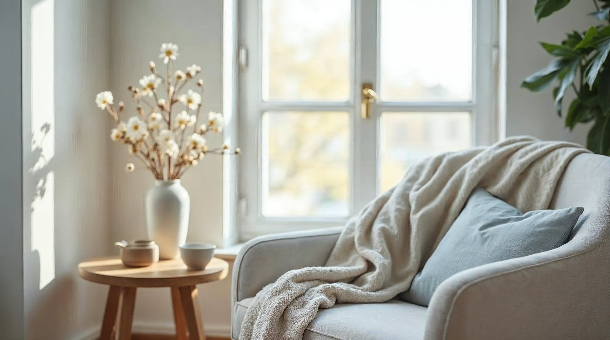
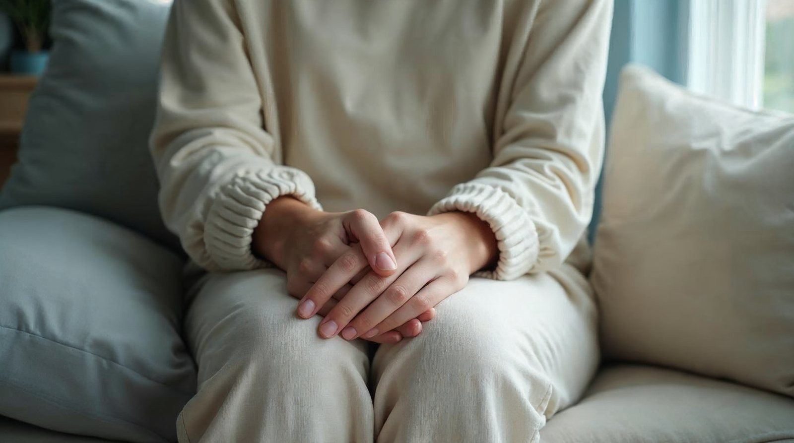
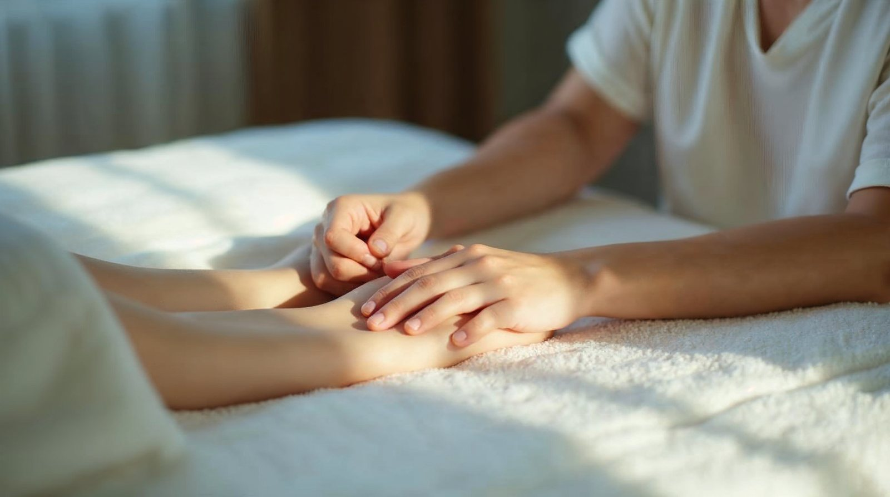
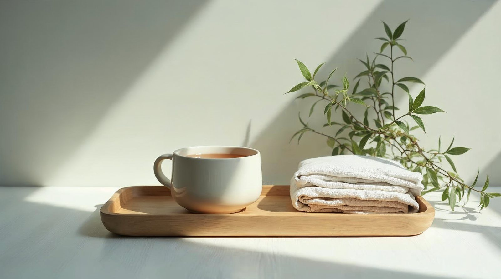

이종호 한의사 감수좋은꿈참사랑한의원 대표원장 (한의사 면허번호 19769)발행 2026-11-23 · 수정 2026-11-26
이 글의 차례
- 왜 침이 무섭게 느껴질 수 있나요
- 자주 하는 오해
- 예를 들면 이런 경우입니다
- 먼저 이렇게 여쭙니다
- 일상에서 먼저 해 볼 수 있는 것
- 스스로 점검해 보세요
- 한의원에서 함께 살필 수 있는 경우
- 얼마나 지켜보면 될까요
- 이렇게 기록해 오시면 상담이 쉬워집니다
- 침은 주사와 어떻게 다른가요?
- 무서움을 이렇게 말해 보세요
- 왜 처음에는 적은 수로 시작하기도 할까요?
- 침을 맞는 동안 해 볼 수 있는 것
- 진료가 끝난 뒤에는
- 무서움이 줄어드는 데는 시간이 걸릴 수 있습니다
- 왜 무서움을 말하면 치료에도 도움이 될까요?
- 아이가 침을 무서워할 때 보호자가 할 수 있는 것
- 바늘 말고 다른 것이 무섭다면
- 처음 오는 날은 이렇게 준비하세요
- 침 없이 시작한다면 첫날은 이렇게 진행합니다
- 예전에 침을 맞고 힘들었던 기억이 있다면
- 왜 그날의 컨디션을 먼저 여쭐까요?
- 침 맞는 날 마음을 편하게 하는 작은 방법
- 침이 무서워 미뤄 온 분께 드리고 싶은 말
- 진료가 끝나면 무엇이 편했는지 알려 주세요
- 이런 증상은 먼저 확인이 필요합니다
- 함께 읽으면 좋은 글
침이 무섭다면 접수나 상담 때 "침이 무서워요"라고 먼저 말씀해 주시면 됩니다. 그러면 과정을 먼저 설명하고, 누운 자세로 바꾸거나 속도를 늦추는 등 그에 맞춰 천천히 진행합니다. 침을 꼭 맞아야만 진료가 가능한 것은 아니며, 불편하면 언제든 멈춰 달라고 하셔도 됩니다.
왜 침이 무섭게 느껴질 수 있나요
- 주사나 바늘에 대한 기억이 떠올라 침도 아플까 봐 걱정하는 분이 많습니다.
- 예전에 침이나 주사 때 어지럽거나 식은땀이 났던 경험이 있으면 긴장이 더 커집니다.
- 무엇을 하는지 모르는 상태가 두려움을 키우기도 합니다.
- 긴장하면 근육이 굳어 같은 자극도 더 크게 느껴질 수 있습니다.
자주 하는 오해
- 무섭다고 말하면 진료를 못 받는다고 여기기 쉽지만, 먼저 말씀해 주셔야 설명과 속도를 맞춰 진행할 수 있습니다.
- 한 번 시작하면 끝까지 참아야 한다고 생각하기 쉽지만, 진행 중에도 언제든 멈춰 달라고 하실 수 있습니다.
- 침을 맞지 않으면 한의원에 갈 이유가 없다고 여기는 분도 있지만, 진맥과 상담, 온열, 추나, 한약 상담처럼 다른 방법으로 시작할 수도 있습니다.
- 어른이 침을 무서워하는 것은 부끄러운 일이라고 생각하기 쉽지만, 생각보다 많은 분이 같은 걱정을 하십니다.
예를 들면 이런 경우입니다
- 예를 들어 어릴 때 주사를 맞고 어지러웠던 기억이 있는 직장인이라면, 누운 자세로 시작하고 침 수를 적게 하며 중간중간 괜찮은지 여쭙는 방식으로 진행할 수 있습니다.
- 예를 들어 시험을 앞두고 긴장이 큰 수험생이라면, 그날은 상담과 진맥으로 몸 상태를 먼저 살피고 침은 다음 진료에서 다시 상의할 수 있습니다.
- 예를 들어 아이를 안고 온 보호자가 아이가 침을 무서워할까 걱정한다면, 아이 앞에서 과정을 천천히 설명하고 보호자가 곁에 있도록 합니다.

먼저 이렇게 여쭙니다
- 침이나 주사를 맞을 때 특히 무서운 부분은 무엇인가요? 바늘, 아픔, 쓰러질 것 같은 느낌 중 어떤가요?
- 예전에 어지럽거나 식은땀이 났던 경험이 있나요?
- 침 말고 다른 방법으로 시작하고 싶으신가요?
- 앉은 자세와 누운 자세 중 어느 쪽이 편한가요?

일상에서 먼저 해 볼 수 있는 것
- 접수나 상담 때 무섭다는 점을 먼저 말하기
- 진료 전 가볍게 식사하고 오기(공복이면 어지럼이 생기기 쉬움)
- 치료 중 천천히 깊게 숨 쉬며 긴장 풀기
- 보호자나 가족과 함께 와서 옆에 있어 달라고 하기
- 바늘을 보는 것이 힘들면 침을 놓는 동안 눈을 감거나 다른 곳을 보겠다고 미리 말하기
- 전날 잠을 충분히 자고, 피곤이 심한 날은 일정을 미루기
- 궁금한 점을 미리 적어 와서 치료 전에 하나씩 물어보기
스스로 점검해 보세요
- 바늘을 보기만 해도 가슴이 두근거린다
- 예전에 주사나 채혈 때 어지럽거나 식은땀이 난 적이 있다
- 공복이거나 피곤하면 쉽게 어지러운 편이다
- 무서워서 진료 자체를 미뤄 온 적이 있다
- 누운 자세가 앉은 자세보다 마음이 편하다
- 피를 묽게 하는 약(항응고제 등)을 먹고 있다
해당하는 항목이 있다면 접수 때 그대로 말씀해 주세요. 그에 맞춰 자세와 순서를 정합니다.

한의원에서 함께 살필 수 있는 경우
- 침이 두려워 진료를 미뤄 온 분께 방법과 순서를 먼저 말씀드립니다.
- 처음에는 침을 쓰지 않는 방법으로 시작할지 함께 정합니다.
- 아이가 침을 무서워할 때 아이 눈높이에 맞춰 천천히 말씀드립니다.
좋은꿈참사랑한의원에서는 먼저 불편한 점과 두려운 부분을 듣고, 진맥을 기본으로 하고 필요하다고 판단될 때 설진을 더해 살핀 뒤 침, 온열, 추나, 한약 상담 가운데 지금 받아들이기 편한 방법부터 정합니다. 침을 쓰게 되면 누운 자세에서 하나씩 천천히 진행하고, 중간중간 괜찮은지 여쭙습니다.
첫 방문의 흐름은 이렇습니다. 먼저 문진으로 불편한 점과 두려운 부분을 듣고, 진맥으로 그날 몸 상태를 살핍니다. 필요하다고 판단될 때만 초음파 같은 장비로 아픈 부위를 확인하고, 잠·소화·배변 같은 생활 기록을 함께 본 뒤 어떤 방법을 어떤 순서로 할지 설명해 드립니다.
설명을 듣고 마음이 정해지지 않으면 그날은 침 없이 진행하고 다음에 다시 상의해도 됩니다.

얼마나 지켜보면 될까요
- 침을 맞은 자리에 남는 뻐근함이나 작은 멍은 대개 며칠 안에 옅어지는 경우가 많습니다.
- 멍이 점점 커지거나, 일주일이 지나도 뻐근함이 오히려 심해진다면 다음 진료 전이라도 연락해 주세요.
- 무서움 때문에 잠을 설치거나 진료 날이 다가올수록 불안이 커진다면, 그 마음도 진료 때 말씀해 주시면 함께 살핍니다.
이렇게 기록해 오시면 상담이 쉬워집니다
- 예전에 침이나 주사 때 있었던 반응
- 특히 무서운 부분
- 공복이나 피곤할 때 어지러운 편인지
- 복용 중인 약(항응고제 포함)
- 편했던 자세나 방법(예: 누워서, 보호자와 함께, 설명을 먼저 듣고)
- 지난 진료에서 괜찮았던 점과 불편했던 점
침은 주사와 어떻게 다른가요?
주사 바늘은 속이 비어 있어 약을 넣는 구조이고, 일반적인 침은 속이 찬 가는 바늘입니다. 그래서 주사를 떠올리며 걱정하셨던 분이 막상 침을 보고 생각보다 가늘다고 말씀하시는 경우가 많습니다.
다만 느낌은 사람마다, 부위마다 다릅니다. 약침은 약재에서 얻은 액을 넣는 방식이라 일반 침과 느낌이 다를 수 있습니다. 어떤 방법을 쓰는지 궁금하면 시작 전에 물어보시고, 바늘을 미리 보고 싶은지 보고 싶지 않은지도 말씀해 주세요.
무서움을 이렇게 말해 보세요
- "바늘을 보면 긴장돼요. 놓기 전에 미리 말해 주세요."
- "예전에 주사 맞고 몸이 힘들었던 적이 있어요."
- "오늘은 침 없이 상담만 받고 싶어요."
- "처음이라 한두 개만 먼저 해 보고 싶어요."
- "놓을 때마다 어디에 놓는지 알려 주세요."
한 문장만 말씀해 주셔도 진행 방법을 거기에 맞춰 바꿀 수 있습니다. 말로 꺼내기 어렵다면 휴대폰 메모를 보여 주셔도 됩니다.
왜 처음에는 적은 수로 시작하기도 할까요?
처음 침을 맞는 날은 몸이 침에 어떻게 반응하는지, 마음이 얼마나 긴장하는지 함께 살피는 날이기도 합니다. 그래서 무서움이 큰 분께는 적은 수로 시작해 반응을 보고, 다음 진료에서 늘릴지 함께 정하기도 합니다.
처음부터 많이 맞아야 한다는 부담을 내려놓으시면 긴장이 한결 줄어듭니다. 그날 받아들이기 편한 만큼에서 시작하는 것이 오래 이어 가기에도 좋다고 생각합니다.
침을 맞는 동안 해 볼 수 있는 것
넷을 세며 코로 들이쉬고, 여섯을 세며 입으로 천천히 내쉬어 보세요. 숨을 길게 내쉬면 어깨와 손에 들어간 힘이 조금씩 빠집니다. 주먹을 꽉 쥐고 있다면 손바닥을 펴서 침대에 편히 올려 두세요.
침을 꽂아 둔 채 쉬는 동안 자세가 불편하거나 몸을 움직이고 싶어지면 참지 말고 말씀해 주세요. 혼자 움직이기보다 알려 주시면 함께 자세를 고쳐 드립니다.
진료가 끝난 뒤에는
치료를 마치면 서두르지 말고 천천히 앉았다가 일어나세요. 물을 한 잔 마시며 잠시 쉬어 가셔도 됩니다. 그날 맞은 자리가 어땠는지, 무엇이 편했고 무엇이 긴장됐는지 휴대폰에 한 줄 적어 두시면 다음 진료 때 도움이 됩니다.
무서움이 줄어드는 데는 시간이 걸릴 수 있습니다
한두 번 받아 보며 순서에 익숙해지면 긴장이 조금씩 줄어드는 분이 많습니다. 하지만 사람마다 속도가 달라, 여러 번 받아도 여전히 무섭다면 그대로 말씀해 주시면 됩니다.
매번 "오늘도 좀 무서워요"라고 말씀하셔도 괜찮습니다. 그 말을 들어야 그날의 속도와 방법을 맞출 수 있습니다.
왜 무서움을 말하면 치료에도 도움이 될까요?
긴장하면 어깨와 등, 손에 저도 모르게 힘이 들어갑니다. 근육이 굳어 있으면 같은 자극도 더 크게 느껴질 수 있어, 무섭다는 말을 들으면 자세와 속도를 먼저 맞추게 됩니다.
말씀해 주시지 않으면 겉으로는 편안해 보여 그대로 진행할 수도 있습니다. 무섭다는 한마디가 그날의 진행 방식을 정하는 가장 중요한 정보입니다.
아이가 침을 무서워할 때 보호자가 할 수 있는 것
아이에게 "하나도 안 따끔해"라고 말하기보다 "조금 따끔할 수도 있는데, 무서우면 말해도 돼"라고 솔직하게 알려 주세요. 기대와 다르면 아이가 다음에 더 무서워할 수 있습니다.
아이가 좋아하는 인형이나 책을 가져와 손에 쥐여 주는 것도 도움이 됩니다. 진료가 끝나면 결과와 상관없이 와 준 것만으로 충분히 칭찬해 주세요. 그 경험이 다음 방문을 조금 덜 두렵게 만듭니다.
바늘 말고 다른 것이 무섭다면
바늘보다 누워 있는 동안 혼자 남는 것이, 또는 낯선 곳에서 옷을 갈아입는 것이 불안하다는 분도 있습니다. 무엇이 불안한지 구체적으로 말씀해 주시면 그 부분을 먼저 살핍니다.
혼자 있는 시간이 불안하다면 그렇다고 말씀해 주세요. 보호자가 곁에 있도록 하거나, 중간중간 괜찮은지 더 자주 여쭙는 식으로 맞출 수 있습니다.
처음 오는 날은 이렇게 준비하세요
팔다리를 걷기 쉬운 편한 옷을 입고, 진료 한두 시간 전에 가볍게 식사를 하고 오세요. 시간에 쫓기면 긴장이 더 커지니 진료 뒤 일정은 여유 있게 잡아 두는 것이 좋습니다.
무서운 점과 묻고 싶은 것을 휴대폰에 적어 오시면 진료실에서 말을 꺼내기가 한결 쉬워집니다.
침 없이 시작한다면 첫날은 이렇게 진행합니다
침 없이 시작하기로 했다면 첫날은 진맥과 상담으로 몸 상태를 살피고, 상태에 따라 온열이나 추나, 한약 상담 가운데 받아들이기 편한 방법을 정합니다.
몇 번 다니며 한의원 분위기와 진료 순서에 익숙해진 뒤 침을 다시 상의하는 분도 많습니다. 침을 맞을지는 언제든 그날의 마음에 맞춰 다시 정하시면 됩니다.
예전에 침을 맞고 힘들었던 기억이 있다면
예전 다른 곳에서 침을 맞고 힘들었던 기억이 있다면 그때 어떤 부위에, 어떤 자세로 맞았고 무엇이 힘들었는지 기억나는 만큼 말씀해 주세요. 그 기억을 바탕으로 이번에는 자세와 순서를 달리해 볼 수 있습니다.
한 번 힘들었던 경험이 있다고 해서 다음에도 같으리라는 법은 없습니다. 그날의 컨디션, 자세, 긴장 정도에 따라 몸의 느낌은 달라질 수 있습니다.
왜 그날의 컨디션을 먼저 여쭐까요?
잠을 설쳤거나 식사를 거른 날, 몹시 피곤한 날에는 마음도 몸도 더 예민해집니다. 평소라면 괜찮았을 자극이 그날은 더 크게 느껴질 수 있습니다.
그래서 침을 놓기 전에 어젯밤 잠과 오늘 식사를 여쭙습니다. 컨디션이 좋지 않은 날이라고 말씀해 주시면 그날은 침의 수를 줄이거나 다른 방법으로 바꾸는 것을 함께 생각합니다.
침 맞는 날 마음을 편하게 하는 작은 방법
진료 날 아침에는 서두르지 않도록 조금 일찍 집을 나서 보세요. 대기실에서는 휴대폰으로 좋아하는 음악을 듣거나, 천천히 숨을 고르며 기다리는 것도 도움이 됩니다.
진료실에 들어가면 "오늘 조금 긴장돼요"라고 먼저 말을 꺼내 보세요. 말로 꺼내고 나면 긴장이 조금 풀리는 분이 많습니다.
침이 무서워 미뤄 온 분께 드리고 싶은 말
아픈 곳이 있는데도 침이 무서워 한의원 문 앞에서 돌아섰다는 분을 종종 만납니다. 그 마음을 충분히 이해합니다. 무서운 것은 의지가 약해서가 아니라, 몸이 스스로를 지키려는 자연스러운 반응입니다.
일단 오셔서 무섭다고 말씀만 해 주세요. 침을 맞을지 말지는 이야기를 다 나눈 뒤에 정해도 늦지 않습니다. 진찰과 상담만으로 시작해도 지금 몸이 어떤 상태인지 함께 살펴볼 수 있습니다.
진료가 끝나면 무엇이 편했는지 알려 주세요
진료를 마친 뒤 "누워서 하니 덜 긴장됐어요", "놓기 전에 말해 주시니 좋았어요"처럼 편했던 점을 짧게 말씀해 주세요. 다음 진료에서도 그 방식을 이어 가고, 긴장됐던 부분은 바꿔 볼 수 있습니다. 이런 이야기가 쌓일수록 진료가 점점 편해집니다.
반대로 불편했던 점도 숨기지 말고 말씀해 주세요. "그 자리는 좀 긴장됐어요" 한마디가 다음 진료에서 자세와 순서를 바꾸는 출발점이 됩니다.
이런 증상은 먼저 확인이 필요합니다
- 치료 중 어지럽거나 식은땀이 나거나 메스꺼운 경우(참지 말고 바로 말씀해 주세요)
- 가슴이 답답하거나 숨쉬기 어려운 경우
이런 신호가 있으면 한의원보다 가까운 병원이나 응급실을 먼저 찾으세요.
함께 읽으면 좋은 글

여쭙는 것
- 침이나 주사를 맞을 때 특히 무서운 부분은 무엇인가요? 바늘, 아픔, 쓰러질 것 같…
- 예전에 어지럽거나 식은땀이 났던 경험이 있나요?
- 침 말고 다른 방법으로 시작하고 싶으신가요?
생활에서 해 볼 것
- 접수나 상담 때 무섭다는 점을 먼저 말하기
- 진료 전 가볍게 식사하고 오기(공복이면 어지럼이 생기기 쉬움)
- 치료 중 천천히 깊게 숨 쉬며 긴장 풀기
한의원에서 함께 살필 것
- 침이 두려워 진료를 미뤄 온 분께 방법과 순서를 먼저 말씀드립니다.
- 처음에는 침을 쓰지 않는 방법으로 시작할지 함께 정합니다.
- 아이가 침을 무서워할 때 아이 눈높이에 맞춰 천천히 말씀드립니다.
먼저 확인이 필요한 신호
- 치료 중 어지럽거나 식은땀이 나거나 메스꺼운 경우(참지 말고 바로 말씀해 주세요)
- 가슴이 답답하거나 숨쉬기 어려운 경우
한눈에 보는 표
| 구분 | 핵심 |
|---|---|
| 여쭙는 것 | 침이나 주사를 맞을 때 특히 무서운 부분은 무엇인가요? 바늘, 아픔, 쓰러질 것 같은 느낌 중 어떤가요? 예전에 어지럽거나 식은땀이 났던 경험이 있나요? |
| 생활에서 해 볼 것 | 접수나 상담 때 무섭다는 점을 먼저 말하기 진료 전 가볍게 식사하고 오기(공복이면 어지럼이 생기기 쉬움) |
| 한의원에서 함께 살필 것 | 침이 두려워 진료를 미뤄 온 분께 방법과 순서를 먼저 말씀드립니다. 처음에는 침을 쓰지 않는 방법으로 시작할지 함께 정합니다. |
| 먼저 확인이 필요한 신호 | 치료 중 어지럽거나 식은땀이 나거나 메스꺼운 경우(참지 말고 바로 말씀해 주세요) 가슴이 답답하거나 숨쉬기 어려운 경우 |
자주 묻는 질문
침이 아픈가요?
느끼는 정도는 사람마다 다릅니다. 불편하면 바로 말씀해 주세요.
한 번 맞고 안 맞겠다고 해도 되나요?
네. 불편하면 중단을 요청할 수 있습니다.
아이가 침을 무서워해요.
아이의 상태와 나이에 맞춰 방법을 정하며 보호자의 설명이 큰 도움이 됩니다.
침 말고 다른 방법으로만 받을 수도 있나요?
상태에 따라 온열, 추나, 한약 상담 등으로 시작할 수 있습니다. 진찰 뒤 함께 정합니다.
침을 맞는 중간에 무서워지면 어떻게 하나요?
그 자리에서 바로 말씀해 주세요. 잠시 멈추고 숨을 고른 뒤, 이어서 할지 그날은 마칠지 함께 정합니다.
좋은꿈참사랑한의원은 재진 때 지난번 이야기부터 이어서 여쭙니다. 진료시간과 예약은 오시는 길에서 확인하세요.
어디서 상담받을 수 있나요?
좋은꿈참사랑한의원은 서울 동작구 만양로2길 2 신성빌딩 3층·5층(서울 동작구 상도동, 7호선 상도역 3번 출구 근처)에 있습니다. 한의사 3명(이종호 대표원장, 조영기 수석진료원장, 정원영 진료원장)이 진료합니다. 진료시간은 평일 09:30~20:00(점심 13:00~14:00), 토·일·공휴일 09:30~15:00이며, 방문 전 전화로 확인을 권합니다. 예약은 네이버 예약, 카카오톡 상담, 전화 02-815-7510로 받습니다.
이 글은 일반적인 건강 정보이며 개인의 진단이나 치료를 대신하지 않습니다. 증상이 있거나 복용 중인 약이 있다면 진료를 통해 확인하세요. 치료 효과는 개인마다 다를 수 있습니다.
작성 기준: 일반적으로 알려져 있는 건강 정보를 참고해 정리했습니다(대표원장 감수). 증상 기록은 1~2주 동안 하루 1회, 비슷한 시간에 적어 오시면 지난 상태와 비교하기 쉽습니다.